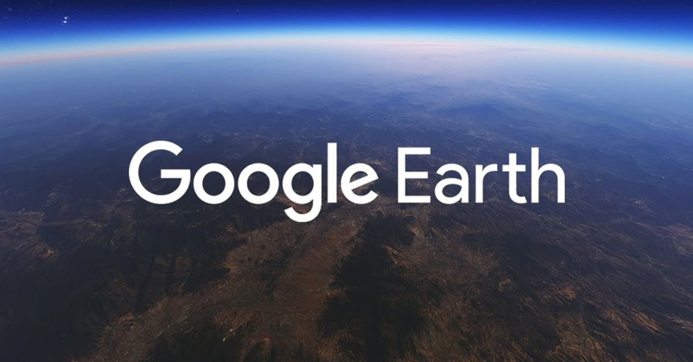

ASSIGNMENT #3 STORY: The Geopolitics of Google
For the third assignment in INF301, we were tasked to select or come up with a keyword
related to information studies. This keyword was to be analyzed and a maximum 2000-word
essay. The essay should cover discourse, academic, policy, and public information on the
keyword. Students would answer the following questions:
- How is the keyword recorded, used and analyzed in scholarly, policy and public debates?
- How does the keyword open up and make us more conscious about issues and problems
related to information in society?
- What are scholars or policy events associated with the use of the keyword?
- What are key resources available for further exploration of the keyword?

Courtesy of Google
Google Inc. and cartography
I chose to write my keyword assignment on the Geopolitics of Google. I define Geopolitics as
anything related to changes in political influence as a result of geological factors Maps and
Google Earth are examples of geopolitical tools. Mapping has always been inherently
geopolitical. Cartographers have always influenced or have been influenced by political factors.
A world becoming increasingly Googlized
One key idea I will reference frequently is the idea of Googlization. Google has been
diversifying its search engine into different contexts, markets, and other applications. Google
is not just a search engine. Google is a company that undergoes infrastructure imperialism. A
key topic discussed in INF301. As to why they do this, we will look at surveillance capitalism.
The user data is the most important asset that Google has. Although Geopolitics, Google Maps,
and Google Earth are a small subset of Googlization, they are significant. Google knows what
your house looks like, and a general idea of where you live while you use their products.
Geopolitics of Google through a scholarly lens
Geopolitics has been used in scholarly sources. Google Maps has been generally regarded as a
tool. This tool is argued to be one of the technical objects that should be at the forefront of
education like mathematics and science.
Google Maps is inherently political
Google Maps, like any cartographer, is inherently political. We have seen policy influence and
been influenced by Google Maps. Google has re-drawn and changed Google Maps as a result of
political pressure.
Google Maps and its geopolitical power
Google Maps has brought attention to unwell documented areas, such as favelas. It brings light
to local businesses and a group of people that have never been acknowledged on the international
scene. This feeds into Google’s geopolitical power.
PDF